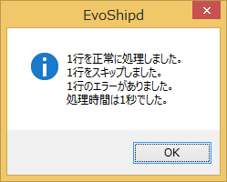
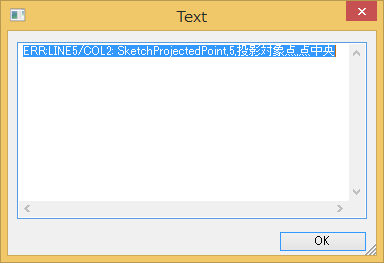
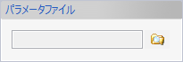
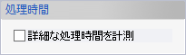
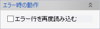

ユーザー定義フィーチャーのパラメータを記述してあるファイルを読み込んで、バッチ処理でユーザー定義フィーチャーをモデルに挿入します。
パラメータファイルを選択するダイアログが表示されます。ファイルを選択して実行します。
挿入しようとするユーザー定義フィーチャー内のすべての要素について、種類が同じでなおかつ同名の要素がドキュメント内にすでに存在していた場合は、挿入処理をスキップします。
コマンド実行後に処理結果がダイアログに表示されます。

エラーがあった場合はエラー行が続けて表示されます。


読み込むパラメータファイルを指定します。

読み込み完了時にCSVファイルの各行の処理時間を表示します。

読み込みに失敗した行を自動的に再度読み込みます。挿入するユーザー定義フィーチャー間に依存関係があると、一度の読み込みではうまくいかないことがあります。そうした場合にはあらかじめこのオプションをONにして読み込みを実行してください。
パラメータファイルはCSVファイル（コンマ区切りのテキストファイル）として作成します。1行につきひとつのユーザー定義フィーチャーを挿入できます。カラムの内容は左から順に下記のようになります。
パラメータ値の指定には複数のカラムを利用することがあります。またパラメータ値の末尾には任意の数の空欄を入れることができます（空欄スキップ）。
| パラメータタイプ | パラメータ値の指定方法 |
|---|---|
| 長さ | 数値（mm）または変数名、計算式 |
| 角度 | 数値（°）または変数名、計算式 |
| 数値 | 数値または変数名、計算式 |
| 要素-点 | 点名（スケッチ点の場合はスケッチ名に続けてスケッチ点名）または座標値（XYZの数値をmmで） |
| 要素-カーブ | カーブ名（スケッチカーブの場合はスケッチ名に続けてスケッチカーブ名） |
| 要素-シート | シートボディ名またはソリッドボディ名（ソリッドボディの場合はさらに続けて対象面を1〜7の数値で指定） |
| 要素-ソリッド | ソリッドボディ名 |
| 要素-サーフェイス（複数） | シートボディ名またはソリッドボディ名（ソリッドボディの場合はさらに続けて対象面を1〜7の数値で指定） |
| 要素-平面 | 平面名または平面の法線方向（X, Y, Zのいずれかの文字列） |
| 要素-方向 | +X, -X, +Y, -Y, +Z, -Zのいずれかの文字列またはベクトル（XYZの数値をmm単位で） |
| カーブ,カーブグループ | スケッチ名あるいはカーブ名。スケッチ名を指定する場合は続いてレイヤー名やスケッチ要素名、カーブ名を指定する場合は複数カーブを指定できます。
|
| 変数 | 数値または変数名、計算式（数値の単位は、長さ変数なら「mm」、角度変数なら「°」） |
| 要素-面 | 開口部が1つある板材ソリッドボディ名（フェイスプレートの取付面と基準面の両方に同じソリッドボディを指定してください） |
| 要素-面・シート・平面・点 | 点またはシートボディ。点要素は点名（スケッチ点の場合はスケッチ名に続けてスケッチ点名）または座標値（XYZの数値をmmで）によって指定します。 |
| 要素-平面プロファイル | スケッチ名。スケッチ内のレイヤーやスケッチ要素を一つ指定することもできます。
|
| 要素-ソリッド | ブラケット名（ブラケット指定フェイスプレートが参照します） |
| 要素-ソリッド、シート | シートボディ名またはソリッドボディ名（ソリッドボディの場合はさらに続けて対象面を1〜7の数値で指定）、複数要素を指定可 |
| 要素-スケッチ平面 | スケッチ平面の原点と軸方向。原点は点名（スケッチ点の場合はスケッチ名に続けてスケッチ点名）または座標値（XYZの数値をmmで）によって、軸方向は+X, -X, +Y, -Y, +Z, -Zのいずれかの文字列またはベクトル（XYZの数値をmm単位で）によって指定します。原点を省略する場合は「-」を指定し、軸方向を省略する場合は空欄にしてください。 |
| 厚さ | 下記の順で指定します。
|
| 押し出し方向 | 順方向（N）、逆方向（R）、両方向（B）、2方向（2）、貫通（T）のいずれか |
| 平面位置 | 平面の法線方向（X, Y, Zのいずれかの文字列）に続けてオフセット距離を数値（mm）または変数名、計算式で。 |
| 厚さ方向 | 内側（+）、外側（-）、2方向（2）、両側（B）のいずれか |
| 板厚 | 下記の順で指定します。
|
| 要素-面・シート・平面・点（複数） | 点、平面、シートボディ、ソリッドボディをいずれか一つ要素名で指定します。
|
| 要素-ロンジ | 条材名 |
| 要素-ホールフィーチャー | ホールフィーチャー名 |